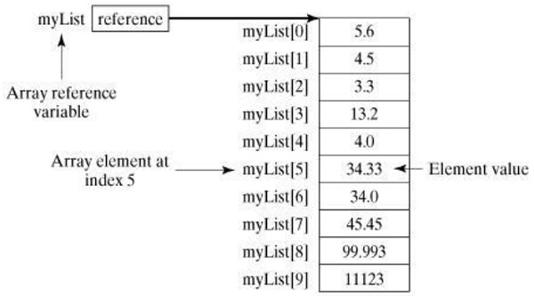

Scala 数组(array)
Scala提供了一种数据结构叫作数组，数组是一种存储了相同类型元素的固定大小顺序集合。数组用于存储数据集合，但将数组视为相同类型变量的集合通常更为有用。
可以声明一个数组变量，例如:numbers，使用numbers[0]，numbers[1]和...，numbers[99]来表示单个变量，而不是分别地声明每个变量，例如number0，number1，...等变量。 本教程介绍如何使用索引变量声明数组变量，创建数组和使用数组。数组的第一个元素的索引是数字0，最后一个元素的索引是元素的总数减去1。
声明数组变量
要在程序中使用数组，必须先声明一个变量来引用数组，并且必须指定变量可引用的数组类型。
以下是声明数组变量的语法。
语法
var z:Array[String] = new Array[String](3)
// 或者
var z = new Array[String](3)
这里，变量z被声明为可以容纳三个元素的字符串数组。可以将值分配给单个元素或访问每个元素，访问元素通过使用如下命令来完成：
z(0) = "Zara"; z(1) = "Nuha"; z(4/2) = "Ayan"
一般来说，索引可以是产生整数的任何表达式。还有一种定义数组的方法 -
var z = Array("Maxsu", "Nancy", "Alen")
以下图片表示一个名称为：myList的数组。 这里，myList保存十个双精度(double)值，索引为0到9。

处理处理
当处理数组元素时，我们经常使用循环控制结构，因为数组中的所有元素都是相同的类型，数组的大小是已知的。
下面是一个示例程序，演示如何创建，初始化和处理数组 -
示例
文件名:Array1.scala
object Array1 {
def main(args: Array[String]) {
var myList = Array(1.9, 2.9, 3.4, 3.5)
// Print all the array elements
for ( x <- myList ) {
println( x )
}
// Summing all elements
var total = 0.0;
for ( i <- 0 to (myList.length - 1)) {
total += myList(i);
}
println("Total is " + total);
// Finding the largest element
var max = myList(0);
for ( i <- 1 to (myList.length - 1) ) {
if (myList(i) > max) max = myList(i);
}
println("Max is " + max);
}
}
scala /share/lesson/scala/Array1.scala
康康
Scala不直接支持各种数组操作，它提供各种方法来处理任何维度的数组。 如果要使用不同的方法，则需要导入Array._包。
多维数组
在许多情况下，需要定义和使用多维数组(即数组的数组)。 例如，矩阵和表是可以被实现为二维数组结构的例子。
以下是定义二维数组的示例 -
var myMatrix = ofDim[Int](3,3)
这是一个具有三个元素的数组，每个元素都是一个具有三个元素的整数数组。
尝试以下示例程序来处理多维数组
文件名:Array2.scala
import Array._
object Array2 {
def main(args: Array[String]) {
var myMatrix = ofDim[Int](3,3)
// build a matrix
for (i <- 0 to 2) {
for ( j <- 0 to 2) {
myMatrix(i)(j) = j;
}
}
// Print two dimensional array
for (i <- 0 to 2) {
for ( j <- 0 to 2) {
print(" " + myMatrix(i)(j));
}
println();
}
}
}
scala /share/lesson/scala/Array2.scala
康康
连接阵列
尝试使用concat()方法连接两个数组的以下示例。可以将多个数组作为参数传递给concat()方法。
文件名:Array3.scala
import Array._
object Array3 {
def main(args: Array[String]) {
var myList1 = Array(1.9, 2.9, 3.4, 3.5)
var myList2 = Array(8.9, 7.9, 0.4, 1.5)
var myList3 = concat( myList1, myList2)
// Print all the array elements
for ( x <- myList3 ) {
println( x )
}
}
}
使用以下命令编译和执行此程序。
scala /share/lesson/scala/Array3.scala
使用范围创建数组
使用range()方法来生成包含给定范围内增加整数序列的数组。 您可以使用final参数作为步差来创建序列; 如果不使用final参数，则步差将被假定为1。
让我们举个例子来创建一个范围(10,20,2)的数组：创建一个数组，其元素介于10和20之间，范围步差为2，数组中的元素是：10,12,14,16和18。
另一个例子：range(10，20)。 这里的范围不同，默认情况下它假定为1个元素。 它创建一个数组，其元素介于10和20之间，范围步差为1。数组中的元素为：10,11,12,13，...和19。
以下示例程序显示如何使用范围创建数组。
示例
文件名:Array4.scala
import Array._
object Demo {
def main(args: Array[String]) {
var myList1 = range(10, 20, 2)
var myList2 = range(10,20)
// Print all the array elements
for ( x <- myList1 ) {
print( " " + x )
}
println()
for ( x <- myList2 ) {
print( " " + x )
}
}
}
使用以下命令编译和执行此程序。
scala /share/lesson/scala/Array4.scala
Scala数组方法
以下是使用数组时可以使用的重要方法。 如上所示，必须在使用任何上述方法之前导入Array._包。 有关可用方法的完整列表，请查看Scala的官方文档。
| 序号 | 方法 | 说明 |
|---|---|---|
| 1 | def apply( x: T, xs: T* ): Array[T] |
创建一个T对象数组，其中T可以是：Unit，Double，Float，Long，Int，Char，Short，Byte，Boolean。 |
| 2 | def concat[T]( xss: Array[T]* ): Array[T] |
将所有数组连接成一个数组。 |
| 3 | def copy( src: AnyRef, srcPos: Int, dest: AnyRef, destPos: Int, length: Int ): Unit |
将一个数组复制到另一个。 相当于Java的System.arraycopy(src，srcPos，dest，destPos，length)。 |
| 4 | def empty[T]: Array[T] |
返回长度为0的数组 |
| 5 | def iterate[T]( start: T, len: Int )( f: (T) => T ): Array[T] |
返回一个包含函数的重复应用程序到一个起始值的数组。 |
| 6 | def fill[T]( n: Int )(elem: => T): Array[T] |
返回一个包含某些元素计算结果的数组。 |
| 7 | def fill[T]( n1: Int, n2: Int )( elem: => T ): Array[Array[T]] |
返回一个包含一些元素计算结果的二维数组。 |
| 8 | def iterate[T]( start: T, len: Int)( f: (T) => T ): Array[T] |
返回一个包含一个函数的重复应用程序到一个起始值的数组。 |
| 9 | def ofDim[T]( n1: Int ): Array[T] |
创建具有给定维度的数组。 |
| 10 | def ofDim[T]( n1: Int, n2: Int ): Array[Array[T]] |
创建一个二维数组 |
| 11 | def ofDim[T]( n1: Int, n2: Int, n3: Int ): Array[Array[Array[T]]] |
创建一个3维数组 |
| 12 | def range( start: Int, end: Int, step: Int ): Array[Int] |
返回一个整数间隔中包含相等间隔值的数组。 |
| 13 | def range( start: Int, end: Int ): Array[Int] |
返回一个包含一个范围内增加整数序列的数组。 |
| 14 | def tabulate[T]( n: Int )(f: (Int)=> T): Array[T] |
从0开始的整数值范围内，返回一个包含给定函数值的数组。 |
| 15 | def tabulate[T]( n1: Int, n2: Int )( f: (Int, Int ) => T): Array[Array[T]] |
返回一个二维数组，其中包含从0开始的整数值范围内给定函数的值。 |